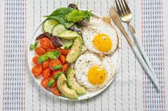

Diet

This is meal is very healthy for a diet.
Delicious and lots of protein.
(Everything here is only
suggestions.)
1.Eggs
2. Avocado
3. Tomatoes
4. Cucumbers
5. Spinach
6. Lettuce
This fills your stomach
too, it makes you full and its healthy.
Be Careful To Also Have Cheat Days!
Things to do with the recipe and what to buy.
Healthy Meal Guide
Grocery List
Produce
🥚 Avocado — 2
🥚 Tomatoes — 3-4
🥚 Cucumbers — 2
🥚 Spinach — 1 bag
🥚 Lettuce — 1 head or bag
Protein
🥚 Eggs — 1 dozen
Optional Extras
🥚 Olive oil
🥚 Salt
🥚 Black pepper
🥚 Lemon juice
🥚 Garlic powder
🥚 Feta cheese
🥚 Toast or tortillas
Recipe 1: Avocado Egg Toast
Ingredients
🥚 2 eggs
🥚 1 avocado
🥚 Handful of spinach
🥚 1 tomato
🥚 Salt & pepper
🥚 Toast
Step-by-Step
🥚 Toast 2 slices of bread.
🥚 Mash the avocado in a bowl with a pinch of salt and pepper.
🥚 Slice the tomato.
🥚 Cook the eggs:
🥚 Fried: cook 2-3 minutes per side.
🥚 Scrambled: whisk and cook while stirring.
🥚 Spread avocado onto the toast.
🥚 Add spinach, tomato slices, and eggs on top.
🥚 Season lightly and serve.
Recipe 2: Fresh Salad Bowl
Ingredients
🥚 Lettuce
🥚 Spinach
🥚 Tomatoes
🥚 Cucumbers
🥚 2 boiled eggs
🥚 Avocado
Step-by-Step
🥚 Wash all vegetables.
🥚 Chop lettuce and spinach into bite-sized pieces.
🥚 Slice cucumbers and tomatoes.
🥚 Boil eggs for about 10 minutes, then peel and slice.
🥚 Cut avocado into cubes or slices.
🥚 Add everything to a large bowl.
🥚 Drizzle olive oil and lemon juice on top.
🥚 Toss gently and serve cold.
Recipe 3: Spinach Egg Scramble
Ingredients
🥚 3 eggs
🥚 Handful of spinach
🥚 Tomato slices
🥚 Avocado on the side
Step-by-Step
🥚 Crack eggs into a bowl and whisk.
🥚 Heat a pan on medium heat with a little oil.
🥚 Add spinach and cook for 1 minute.
🥚 Pour in eggs and stir slowly.
🥚 Cook until fluffy.
🥚 Serve with sliced tomatoes and avocado.
Simple Weekly Meal Idea
🥚 Breakfast — Avocado egg toast
🥚 Lunch — Salad bowl
🥚 Dinner — Spinach egg scramble
🥚 Snack — Cucumbers & avocado